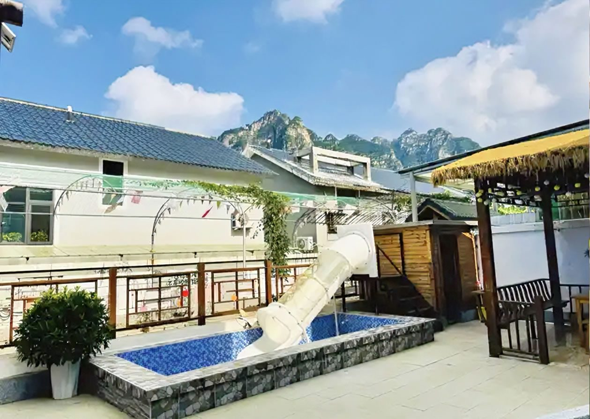
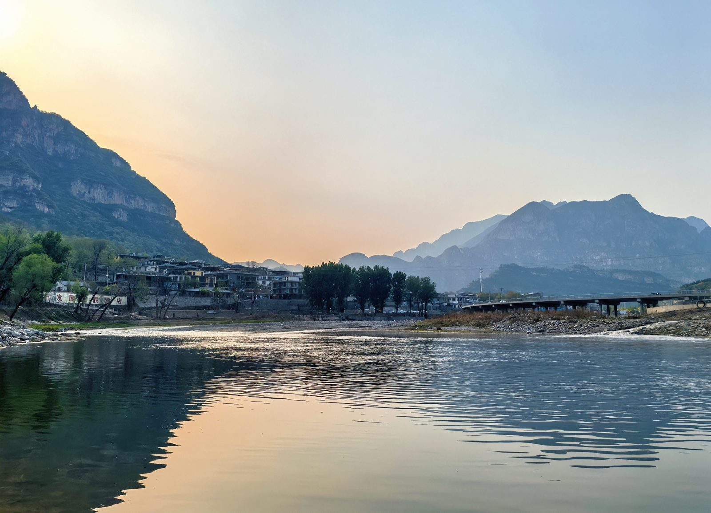
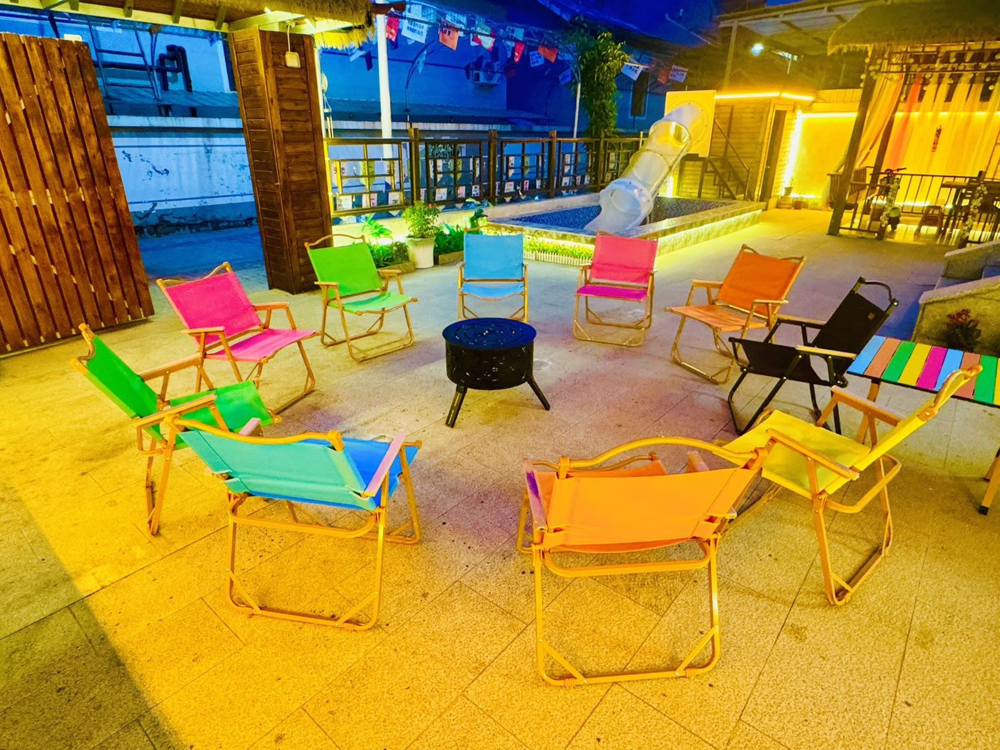
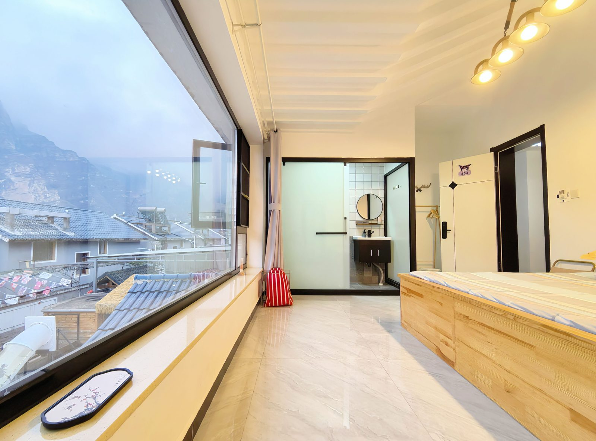
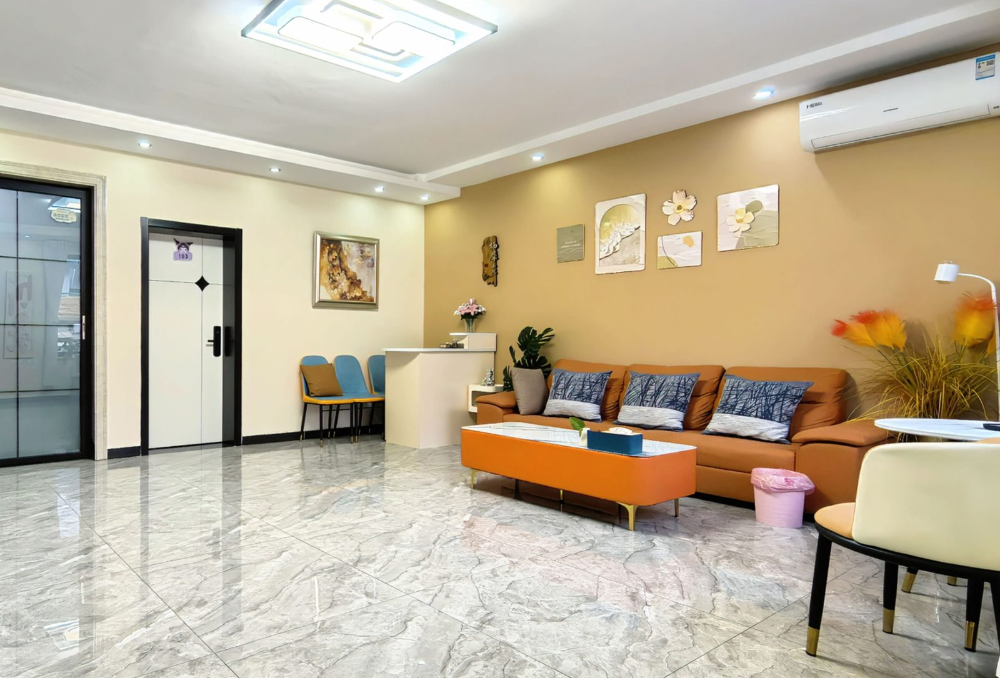

十渡亲子玩水
十渡带孩子玩水，重点不是刺激，是轻松
暑假带孩子来十渡，最重要的是少赶路、少排队、多留休息。孩子喜欢水，但不一定适合强刺激漂流。拒马河、浅滩、溪流、轻量景区和带戏水池的小院，往往比一次排满项目更舒服。

带孩子玩水，先按年龄选项目
适合带娃的玩水点
拒马河边适合傍晚散步和看山水，强度最低；七渡孤山寨更像溪流和峡谷轻徒步，孩子可以看瀑布、踩水、玩水枪；十二渡浅滩适合露营、摸鱼、踩水这类低强度玩法；东湖港和聚龙湾则适合想要景区配套、拍照和轻量项目的家庭。
如果孩子年龄比较小，不建议把乐谷银滩这类强刺激漂流作为第一选择。可以先在水边玩、在院子里玩，再根据孩子状态决定第二天是否加项目。


不太适合低龄孩子的项目
蹦极、峡谷飞人、飞拉达、高强度漂流、长时间爬山和部分高空玻璃栈道，对低龄孩子不一定友好。它们不是不能玩，而是要看孩子身高、年龄、胆量、当天体力和景区要求。
带娃两天一晚路线


为什么亲子家庭适合住栖犀小院
栖犀小院位于十渡镇九渡村别墅区，靠近拒马河、拒马乐园、聚龙湾等项目。小院共7间客房，均带独立卫浴，可住约17-20人，有儿童戏水泳池、烧烤、KTV、麻将棋牌、免费停车和充电车位。
对亲子家庭来说，这意味着两件事：白天去十渡玩水和景区，晚上不用再找地方消耗孩子精力；几家人一起出行，也不用分散住，孩子之间有伴，大人也能一起吃饭聊天。
常见问题
十渡适合几岁孩子去？
低龄孩子适合浅水、河边、院内戏水和轻量景区；年龄大一些再考虑漂流、玻璃栈道、卡丁车等项目。具体要看孩子体力和景区限制。
十渡带孩子需要准备什么？
建议带换洗衣物、毛巾、溯溪鞋、防晒、驱蚊、全密封防水袋、孩子零食和常用药。暑假周末建议提前订房。
带孩子住栖犀小院方便吗？
方便。小院有独立院子、儿童戏水泳池、7间独立卫浴客房和公共空间，适合亲子家庭和几家人一起包院。